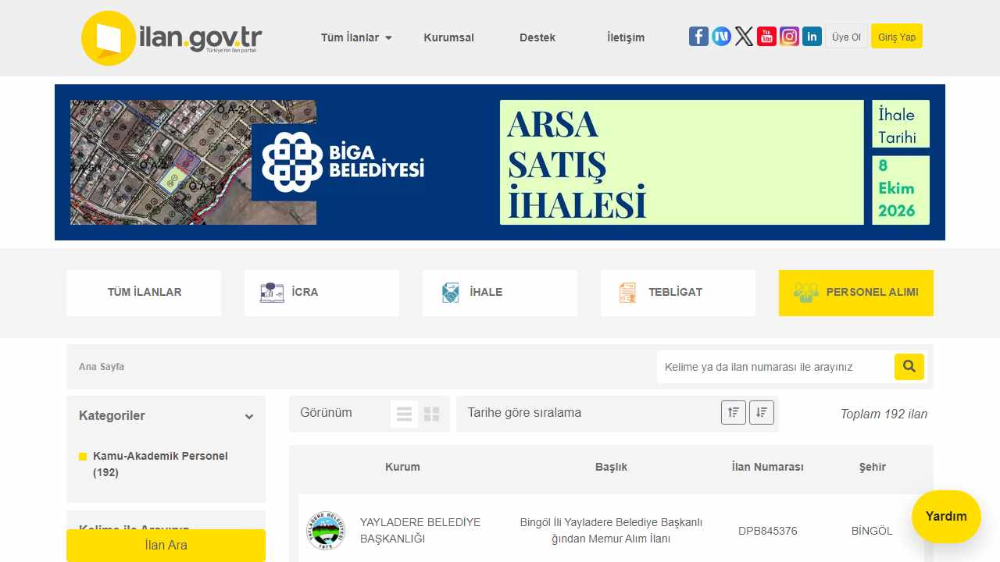
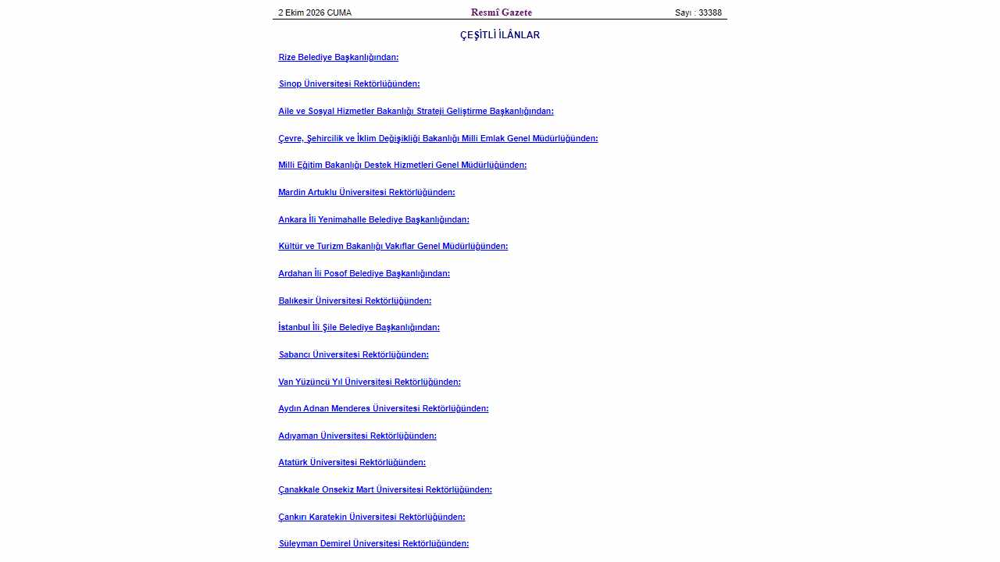
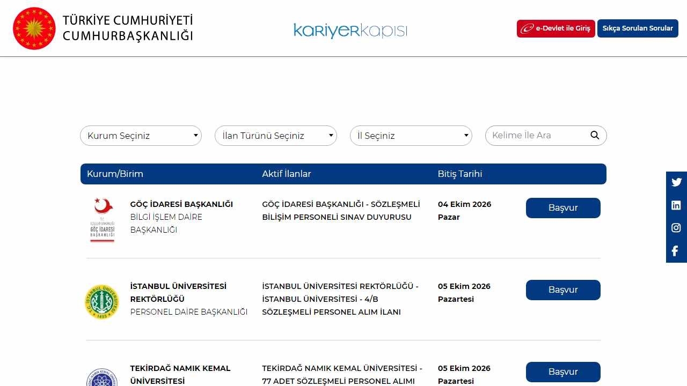
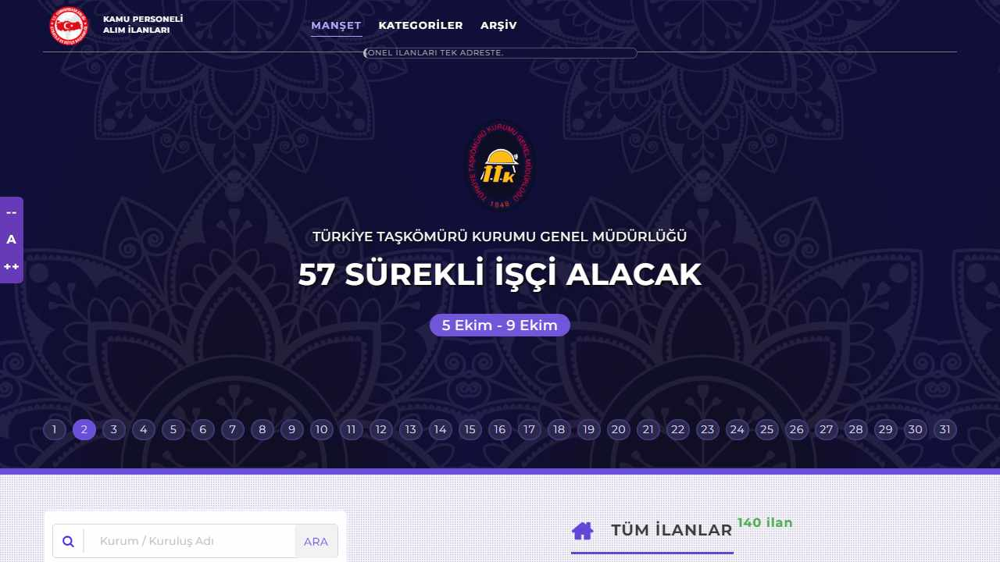
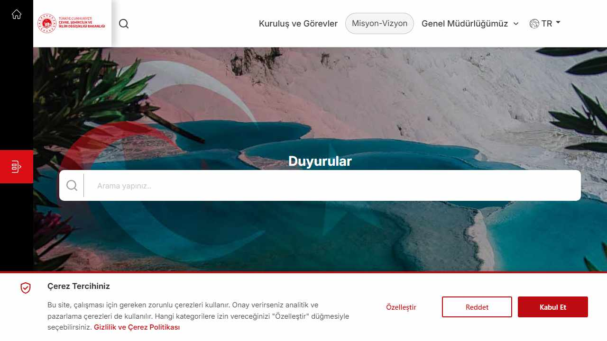
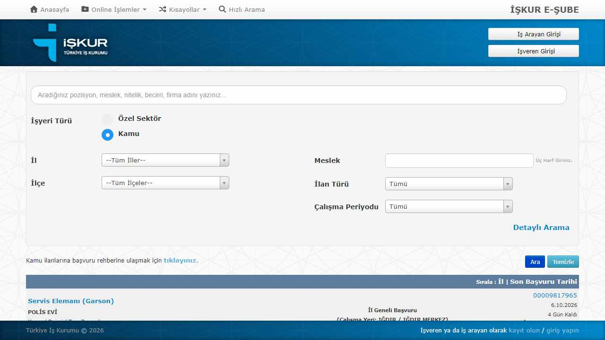

Not: sitede toplam: 192, okunan: 193, sayfalama: currentPage
Son URL: https://www.ilan.gov.tr/ilan/tum-ilanlar/personel-alimi?ats=5¤tPage=16
Başlık: ilan.gov.tr - Türkiye'nin İlan Portalı

Tüm İlanlar Kurumsal Destek İletişim Üye OlGiriş Yap Yardım TÜM İLANLAR İCRA İHALE TEBLİGAT PERSONEL ALIMI Ana Sayfa Kategoriler Kamu-Akademik Personel (192) Kelime ile Arayınız İlan Yeri Lütfen İl Seçiniz Yayın Tarihi Yayına Göre Arama Lütfen Yayın Seçiniz Kuruma Göre Arama Lütfen Kurum Seçiniz Fiyat İlan Türü Seçiniz İCRA İHALE TEBLİGAT PERSONEL ALIMI Eleman Sayısı Aranılan Nitelik ve Unvan Başvuru Süresi İlan Ara Görünüm Tarihe göre sıralama Toplam 192 ilan Kurum Başlık İlan Numarası Şehir YAYLADERE BELEDİYE BAŞKANLIĞI Bingöl İli Yayladere Belediye Başkanlığından Memur Alım İlanı DPB845376 BİNGÖL UZUNKÖPRÜ BELEDİYE BAŞKANLIĞI Uzunköprü Belediye Başkanlığı Memur Alım İlanı DPB845375 EDİRNE ZONGULDAK BELEDİYE BAŞKANLIĞI Zonguldak Belediye Başkanlığından Zabıta Memuru Alım İlanı DPB845372 ZONGULDAK ORTAHİSAR BELEDİYE BAŞKANLIĞI Nevşehir Ortahisar Belediye Başkanlığından Memur Alım İlanı DPB845371 NEVŞEHİR SUBAŞI BELEDİYE BAŞKANLIĞI Yalova İli Subaşı Belediye Başkanlığından Memur Alım İlanı DPB845369 YALOVA HAN BELEDİYE BŞK. Han Belediye Başkanlığı Personel Alım İlanı DPB845360 ESKİŞEHİR KOÇ ÜNİVERSİTESİ REKTÖRLÜĞÜ Koç Üniversitesi Rektörlüğü Araştırma Görevlisi Alım İlanı YOK853101 İSTANBUL BORNOVA BELEDİYE BAŞKANLIĞI Bornova Belediye Başkanlığı Zabıta Memuru Alım İlanı DPB845327 İZMİR GELİR İDARESİ BAŞKANLIĞI Gelir İdaresi Başkanlığından 860 Gelir Uzman Yardımcısı Alım İlanı DPB845283 ANKARA TÜRMOB TÜRKİYE SERBEST MUHASEBECİ MALİ MÜŞAVİRLER VE YEMİNLİ MALİ MÜŞAVİRLER
'' -> / 'Tüm İlanlar' -> /ilan/tum-ilanlar 'İCRA' -> /ilan/tum-ilanlar/icra?ats=2 'İHALE' -> /ilan/tum-ilanlar/ihale?ats=3 'TEBLİGAT' -> /ilan/tum-ilanlar/tebligat?ats=4 'PERSONEL ALIMI' -> /ilan/tum-ilanlar/personel-alimi?ats=5 '' -> /ilan/tum-ilanlar/icra?ats=2 '' -> /ilan/kategori/1/emlak?ats=2 '' -> /ilan/kategori/2/vasita?ats=2 '' -> /ilan/kategori/4/endustriyel-urunler?ats=2 '' -> /ilan/kategori/6/elektronik?ats=2 '' -> /ilan/kategori/3/muhtelif?ats=2 '' -> /ilan/tum-ilanlar/ihale?ats=3 '' -> /ilan/kategori/9/ihale-duyurulari?ats=3 '' -> /ilan/kategori/1/emlak?ats=3 '' -> /ilan/kategori/2/vasita?ats=3 '' -> /ilan/kategori/4/endustriyel-urunler?ats=3 '' -> /ilan/kategori/3/muhtelif?ats=3 '' -> /ilan/tum-ilanlar/tebligat?ats=4 '' -> /ilan/kategori/7/tebligat-ve-duyurular?ats=4 '' -> /ilan/kategori/12/iflas-hukuku-davalari?ats=4 '' -> /ilan/kategori/8/kamu-akademik-personel?ats=4 '' -> /ilan/tum-ilanlar/personel-alimi?ats=5 '' -> /ilan/kategori/8/kamu-akademik-personel?ats=5 '' -> /ilan/tum-ilanlar 'Kurumsal' -> /kurumsal-basin-ilan-kurumu 'Destek' -> /yardim-nasil-uye-olurum 'İletişim' -> /iletisim-genel-mudurluk '' -> https://www.facebook.com/resmiilan/ '' -> https://sosyal.teknofest.app/@ilangovtr '' -> https://twitter.com/ilangovtr '' -> https://www.youtube.com/channel/UCoLna6joUEuJ4eO7bjCP_Bw '' -> https://www.instagram.com/resmiilan/ '' -> https://www.linkedin.com/company/ilan-gov-tr/ 'Üye Ol' -> /uyelik/uye-ol 'Giriş Yap' -> /uyelik/giris '' -> https://www.ilan.gov.tr/ilan/2232698/emlak-arsa-biga-belediyesinden-1-adet-tasinmaz-satilacaktir-verilecektir 'TÜM İLANLAR' -> /ilan/tum-ilanlar 'İCRA' -> /ilan/tum-ilanlar/icra?ats=2 'İHALE' -> /ilan/tum-ilanlar/ihale?ats=3
GET 200 https://www.ilan.gov.tr//assets/appconfig.production.json
yanıt: {
"remoteServiceBaseUrl": "https://www.ilan.gov.tr/api",
"appBaseUrl": "https://www.ilan.gov.tr",
"cdnBaseUrl": "https://medya.ilan.gov.tr/"
}
GET 200 https://www.ilan.gov.tr/api/AbpUserConfiguration/GetAll
yanıt: {"result":{"multiTenancy":{"isEnabled":false,"ignoreFeatureCheckForHostUsers":false,"sides":{"host":"Host","tenant":"Tenant"}},"session":{"userId":null,"tenantId":1,"impersonatorUserId":null,"impersonatorTenantId":1,"multiTenancySide":"Tenant"},"localization":{"currentCulture":{"name":"tr","displayN
POST 200 https://www.google-analytics.com/j/collect?v=1&_v=j102&a=1072985253&t=pageview&_s=1&dl=https%3A%2F%2Fwww.ilan.gov.tr%2Filan%2Ftum-ilanlar%2Fpersonel-alimi%3Fats%3D5&ul=tr-tr&dt=ilan.gov.tr%20-%20T%C3%
GET 200 https://www.ilan.gov.tr/api/api/services/app/Session/GetCurrentLoginInformations
yanıt: {"result":{"application":{"version":"5.0.0.0","releaseDate":"2026-09-24T04:22:04Z","features":{}},"user":null,"tenant":{"tenancyName":"Default","name":"Default","id":1}},"targetUrl":null,"success":true,"error":null,"unAuthorizedRequest":false,"__abp":true}
GET 200 https://www.ilan.gov.tr/api/api/services/app/AdHomePage/GetRichMenuStats
yanıt: {"result":[{"id":2,"key":"İCRA","displayName":null,"slug":"İCRA","plateNumber":null,"count":0,"stats":[{"id":1,"key":"Emlak","displayName":null,"slug":"Emlak","plateNumber":null,"count":7756,"stats":null,"orderNo":25,"statType":"Category","logoPath":null,"iconFullPath":null},{"id":2,"key":"Vasıta","
GET 200 https://www.ilan.gov.tr/api/api/services/app/Banner/GetDetailUniversal?bannerPositionEnum=Popup_Genel
yanıt: {"result":null,"targetUrl":null,"success":true,"error":null,"unAuthorizedRequest":false,"__abp":true}
GET 200 https://www.ilan.gov.tr/api/api/services/app/Banner/GetDetailUniversal?bannerPositionEnum=Mobil_Genel_Ust
yanıt: {"result":{"name":"Biga Belediye Başkanlığı Arsa Satış","imageName":"biga%20Belediye%20G%C3%B6rsel.png","imagePath":"Dosyalar/resim","orderNo":null,"attributeSetId":null,"isActive":true,"bannerPositionId":24,"publishStartDate":"2026-09-30T21:00:00Z","publishEndDate":"2026-10-05T20:59:00Z","bannerTyp
GET 200 https://www.ilan.gov.tr/api/api/services/app/Banner/GetDetailUniversal?bannerPositionEnum=Genel_Ust
yanıt: {"result":{"name":"Biga Belediye Başkanlığı Arsa","imageName":"biga%20Belediye%20G%C3%B6rsel.png","imagePath":"Dosyalar/resim","orderNo":null,"attributeSetId":null,"isActive":true,"bannerPositionId":1,"publishStartDate":"2026-09-30T21:00:00Z","publishEndDate":"2026-10-05T20:59:00Z","bannerType":"UTM
GET 200 https://www.ilan.gov.tr/api/api/services/app/Banner/GetDetailUniversal?bannerPositionEnum=Genel_Sag
yanıt: {"result":null,"targetUrl":null,"success":true,"error":null,"unAuthorizedRequest":false,"__abp":true}
GET 200 https://www.ilan.gov.tr/api/api/services/app/Banner/GetDetailUniversal?bannerPositionEnum=Genel_Sol
yanıt: {"result":null,"targetUrl":null,"success":true,"error":null,"unAuthorizedRequest":false,"__abp":true}
GET 200 https://www.ilan.gov.tr/api/api/services/app/Menu/GetBottomMenu
yanıt: {"result":[{"id":81,"parentId":null,"url":null,"title":"KURUMSAL","children":[{"id":86,"parentId":81,"url":"/kurumsal-basin-ilan-kurumu","title":"Basın İlan Kurumu","children":null,"isSelected":false,"contentTitle":"-","contentSlug":"-","contentDetail":"-"},{"id":170,"parentId":81,"url":"/kurumsal-t
GET 200 https://www.ilan.gov.tr/api/api/services/app/Banner/GetDetailUniversal?bannerPositionEnum=Mobil_Genel_Sag
yanıt: {"result":null,"targetUrl":null,"success":true,"error":null,"unAuthorizedRequest":false,"__abp":true}
GET 200 https://www.ilan.gov.tr/api/api/services/app/Banner/GetDetailUniversal?bannerPositionEnum=Mobil_Genel_Sol
yanıt: {"result":null,"targetUrl":null,"success":true,"error":null,"unAuthorizedRequest":false,"__abp":true}
GET 200 https://www.ilan.gov.tr/api/api/services/app/Banner/GetDetailUniversal?bannerPositionEnum=Mobil_Icsayfa_Ust
GET 200 https://www.ilan.gov.tr/api/api/services/app/Banner/GetDetailUniversal?bannerPositionEnum=Icsayfa_Sol
GET 200 https://www.ilan.gov.tr/api/api/services/app/Banner/GetDetailUniversal?bannerPositionEnum=Icsayfa_Ust
GET 200 https://www.ilan.gov.tr/api/api/services/app/Banner/GetDetailUniversal?bannerPositionEnum=Icsayfa_Sag
GET 200 https://www.ilan.gov.tr/api/api/services/app/Banner/GetDetailUniversal?bannerPositionEnum=Mobil_Icsayfa_Sol
GET 200 https://www.ilan.gov.tr/api/api/services/app/Banner/GetDetailUniversal?bannerPositionEnum=Mobil_Icsayfa_Sag
GET 200 https://www.ilan.gov.tr/api/api/services/app/Filter/GetAllFiltersOfSet?setIdAdType=5
GET 200 https://www.ilan.gov.tr/api/api/services/app/AdHomePage/GetAdStatsByExternalInstitutions
POST 204 https://www.google-analytics.com/g/collect?v=2&tid=G-E5HGE1NKEK>m=45je69u2v9116736288za20ozb9119647798zd9119647798xf1&_p=1790951047361&gcd=13l3l3l3l1l1&npa=0&dma=0&are=1&cid=1357847797.1790951048&fr
POST 204 https://www.google-analytics.com/g/collect?v=2&tid=G-E5HGE1NKEK>m=45je69u2v9116736288za20gzb9119647798zd9119647798xf1&_p=1790951047361&gcd=13l3l3l3l1l1&npa=0&dma=0&_eu=AEAAAAQ&ae=a&are=1&cid=1357847
POST 200 https://www.ilan.gov.tr/api/api/services/app/Ad/AdsByFilter
gövde: {"keys":{"ats":[5]},"skipCount":0,"maxResultCount":12}
POST 200 https://f2c4e469-7c3b-414b-8508-97c3d4b861f1.collector.p.analitik.bik.gov.tr/api/collect
gövde: website=f2c4e469-7c3b-414b-8508-97c3d4b861f1&hostname=www.ilan.gov.tr&screen=1280x720&language=tr-TR&url=/ilan/tum-ilanlar/personel-alimi?ats=5&referrer=/ilan/tum-ilanlar/personel-alimi?ats=5&fingerprNot: sitede toplam: 23, okunan: 20, personel ilanı: 16, PDF bulma: dizin linkleri
Son URL: https://www.resmigazete.gov.tr/ilanlar/eskiilanlar/2026/10/20261002-4.htm
Başlık: ÇEŞİTLİ İLANLAR

2 Ekim 2026 CUMA Resmî Gazete Sayı : 33388 ÇEŞİTLİ İLÂNLAR Rize Belediye Başkanlığından: Sinop Üniversitesi Rektörlüğünden: Aile ve Sosyal Hizmetler Bakanlığı Strateji Geliştirme Başkanlığından: Çevre, Şehircilik ve İklim Değişikliği Bakanlığı Milli Emlak Genel Müdürlüğünden: Milli Eğitim Bakanlığı Destek Hizmetleri Genel Müdürlüğünden: Mardin Artuklu Üniversitesi Rektörlüğünden: Ankara İli Yenimahalle Belediye Başkanlığından: Kültür ve Turizm Bakanlığı Vakıflar Genel Müdürlüğünden: Ardahan İli Posof Belediye Başkanlığından: Balıkesir Üniversitesi Rektörlüğünden: İstanbul İli Şile Belediye Başkanlığından: Sabancı Üniversitesi Rektörlüğünden: Van Yüzüncü Yıl Üniversitesi Rektörlüğünden: Aydın Adnan Menderes Üniversitesi Rektörlüğünden: Adıyaman Üniversitesi Rektörlüğünden: Atatürk Üniversitesi Rektörlüğünden: Çanakkale Onsekiz Mart Üniversitesi Rektörlüğünden: Çankırı Karatekin Üniversitesi Rektörlüğünden: Süleyman Demirel Üniversitesi Rektörlüğünden: Uşak Üniversitesi Rektörlüğünden: Yıldız Teknik Üniversitesi Rektörlüğünden: Kültür ve Turizm Bakanlığından: Türkiye Cumhuriyet Merkez Bankasından:
'Rize Belediye Başkanlığından:' -> 20261002-4-1.pdf 'Sinop Üniversitesi Rektörlüğünden:' -> 20261002-4-2.pdf 'Aile ve Sosyal Hizmetler Bakanlığı Strateji Geliştirme Başkanlığından:' -> 20261002-4-3.pdf 'Çevre, Şehircilik ve İklim Değişikliği Bakanlığı Milli Emlak Genel Müd' -> 20261002-4-4.pdf 'Milli Eğitim Bakanlığı Destek Hizmetleri Genel Müdürlüğünden:' -> 20261002-4-5.pdf 'Mardin Artuklu Üniversitesi Rektörlüğünden:' -> 20261002-4-6.pdf 'Ankara İli Yenimahalle Belediye Başkanlığından:' -> 20261002-4-7.pdf 'Kültür ve Turizm Bakanlığı Vakıflar Genel Müdürlüğünden:' -> 20261002-4-8.pdf 'Ardahan İli Posof Belediye Başkanlığından:' -> 20261002-4-9.pdf 'Balıkesir Üniversitesi Rektörlüğünden:' -> 20261002-4-10.pdf 'İstanbul İli Şile Belediye Başkanlığından:' -> 20261002-4-11.pdf 'Sabancı Üniversitesi Rektörlüğünden:' -> 20261002-4-12.pdf 'Van Yüzüncü Yıl Üniversitesi Rektörlüğünden:' -> 20261002-4-13.pdf 'Aydın Adnan Menderes Üniversitesi Rektörlüğünden:' -> 20261002-4-14.pdf 'Adıyaman Üniversitesi Rektörlüğünden:' -> 20261002-4-15.pdf 'Atatürk Üniversitesi Rektörlüğünden:' -> 20261002-4-16.pdf 'Çanakkale Onsekiz Mart Üniversitesi Rektörlüğünden:' -> 20261002-4-17.pdf 'Çankırı Karatekin Üniversitesi Rektörlüğünden:' -> 20261002-4-18.pdf 'Süleyman Demirel Üniversitesi Rektörlüğünden:' -> 20261002-4-19.pdf 'Uşak Üniversitesi Rektörlüğünden:' -> 20261002-4-20.pdf 'Yıldız Teknik Üniversitesi Rektörlüğünden:' -> 20261002-4-21.pdf 'Kültür ve Turizm Bakanlığından:' -> 20261002-4-22.pdf 'Türkiye Cumhuriyet Merkez Bankasından:' -> 20261002-4-23.pdf
POST 200 https://v2-ping-ns01-4878e6a4-2a79-41cc-93d6-0ffc5a9b6c2d.collector.p.analitik.bik.gov.tr/api/collect/check
gövde: {"website":"4878e6a4-2a79-41cc-93d6-0ffc5a9b6c2d","hostname":"www.ilan.gov.tr","eventId":"ad7ac241-61e7-4304-8bd6-8537fd51f221","isBot":false,"td":23,"ts":1790943802000,"timestamp":1790951101665,"actiNot: IlanDetay linkleri doğrudan bulundu; sitede toplam: 21, okunan: 21, harici siteye giden (İlana Git): 2
Son URL: https://kariyerkapisi.gov.tr/isealim
Başlık: Kariyer Kapısı - Anasayfa

e-Devlet ile Giriş Sıkça Sorulan Sorular Kurum Seçiniz ANKARA HACI BAYRAM VELİ ÜNİVERSİTESİ REKTÖRLÜĞÜ(1İLAN) ATATÜRK ÜNİVERSİTESİ REKTÖRLÜĞÜ(1İLAN) BANKACILIK DÜZENLEME VE DENETLEME KURUMU BAŞKANLIĞI (BDDK)(1İLAN) BATI AKDENİZ KALKINMA AJANSI(1İLAN) BİTLİS EREN ÜNİVERSİTESİ REKTÖRLÜĞÜ(1İLAN) DOĞU MARMARA KALKINMA AJANSI (MARKA)(1İLAN) DÜZCE ÜNİVERSİTESİ REKTÖRLÜĞÜ(1İLAN) ERZURUM TEKNİK ÜNİVERSİTESİ REKTÖRLÜĞÜ(1İLAN) GÖÇ İDARESİ BAŞKANLIĞI(1İLAN) HAZİNE VE MALİYE BAKANLIĞI(2İLAN) İSTANBUL ÜNİVERSİTESİ REKTÖRLÜĞÜ(1İLAN) İZMİR BAKIRÇAY ÜNİVERSİTESİ REKTÖRLÜĞÜ(1İLAN) JANDARMA VE SAHİL GÜVENLİK AKADEMİSİ BAŞKANLIĞI(1İLAN) KAMU İHALE KURUMU(2İLAN) MİLLİ SAVUNMA BAKANLIĞI(1İLAN) NİĞDE ÖMER HALİSDEMİR ÜNİVERSİTESİ REKTÖRLÜĞÜ(1İLAN) ÖZELLEŞTİRME İDARESİ BAŞKANLIĞI(1İLAN) SİGORTACILIK VE ÖZEL EMEKLİLİK DÜZENLEME VE DENETLEME KURUMU BAŞKANLIĞI (SEDDK)(1İLAN) TAPU VE KADASTRO GENEL MÜDÜRLÜĞÜ(1İLAN) TEKİRDAĞ NAMIK KEMAL ÜNİVERSİTESİ(1İLAN) TÜRKİYE ULUSLARARASI İSLAM BİLİM VE TEKNOLOJİ ÜNİVERSİTESİ (TİBU)(1İLAN) Kurum Seçiniz İlan Türünü Seçiniz A Grubu Memur (Kariyer Meslek) B Grubu Memur Sözleşmeli Personel İlanları İşçi İlanları Hakim ve Savcı İlanları Görevde Yükselme ve Unvan Değişikliği İlanları Yurt Dışı Eğitim İlanları Belge Başvurusu İlanları Tercih İlanı Öğretim Üyesi Öğretim Görevlisi Araştırma Görevlisi Askeri Personel İlanları Merkezi Yerleştirme (ÖSYM) Sürekli İşçi Geçici İşci Engelli İşçi Eski Hükümlü İşçi Yeterlik Sınavı İlanları İlan Türünü Seçiniz İl Seçiniz BAKANLIK
'' -> # '' -> # 'e-Devlet ile Giriş' -> https://giris.turkiye.gov.tr/OAuth2AuthorizationServer/AuthorizationController?response_type=code&client_id=88 'Sıkça Sorulan Sorular' -> sss '' -> # 'Başvur' -> IlanDetay?i=30329a62-04f3-445a-985f-f6a0b8c2e1b7 'Başvur' -> IlanDetay?i=5054018d-07da-4a99-8aa9-6ad471aa90b7 'Başvur' -> IlanDetay?i=ec8cb14d-917f-4d65-951b-281faac1f564 'Başvur' -> IlanDetay?i=adbf0488-1319-4ed1-911b-2f991cfb129a 'İlana Git' -> https://personeltemin.msb.gov.tr/AnaSayfa/DuyuruDetay/?id=1c390e77-39f0-48ba-a121-c114965341f6 'Başvur' -> IlanDetay?i=69465191-48a2-447c-8f55-edb2ecbeb45a 'Başvur' -> IlanDetay?i=89bd5bac-9eb0-4cd1-93f9-8b154a5189f5 'Başvur' -> IlanDetay?i=cb98ad26-9f19-467b-97f1-6c657b2c1593 'İlana Git' -> https://personeltemin.jandarma.gov.tr 'Başvur' -> IlanDetay?i=61dc4762-6ce3-483c-b629-eaaf6090fb88 'Başvur' -> IlanDetay?i=90be2def-8597-49a5-a02e-e49b6649aaa4 'Başvur' -> IlanDetay?i=f610d591-850c-4344-ae68-03e5e6c7a169 'Başvur' -> IlanDetay?i=215c245e-8d5b-4b93-bc10-0c859069aefa 'Başvur' -> IlanDetay?i=9b93b57a-1ca8-408d-9b71-1d3dc14ff390 'Başvur' -> IlanDetay?i=bbed829a-5960-4a8a-b8a3-8c84226efb36 'Başvur' -> IlanDetay?i=b31162c0-d3dc-4c61-b36d-9e49a1aa5347 'Başvur' -> IlanDetay?i=72a90e54-4258-44d9-903d-295baf21f897 'Başvur' -> IlanDetay?i=bd035022-6f30-4150-8acc-a6061a5dd315 'Başvur' -> IlanDetay?i=12c5b0ac-cd05-4316-9d7c-39ed4d06a358 'Başvur' -> IlanDetay?i=1559e356-a0e2-44e2-869b-beb38c5fdb7a 'Başvur' -> IlanDetay?i=826fbdb8-f082-4294-9ac6-cd0abd98a7c9 'Başvur' -> IlanDetay?i=ac9395a0-1096-4384-abba-76719301f64a 'Başvur' -> IlanDetay?i=eff11df8-6568-4b54-9deb-2865aa9ac767 '' -> https://twitter.com/kariyerkapisi '' -> https://www.linkedin.com/showcase/kariyerkapisi/ '' -> https://www.instagram.com/kariyerkapisi/?igshid=sj6wm9vis9se '' -> https://www.facebook.com/kariyerkapisi/ '' -> /isealim '' -> https://kariyerkapisi.gov.tr/RSS/RssLinkiAl '' -> https://www.linkedin.com/showcase/kariyerkapisi '' -> https://www.facebook.com/kariyerkapisi/ '' -> https://twitter.com/kariyerkapisi '' -> https://instagram.com/kariyerkapisi?igshid=sj6wm9vis9se
POST 200 https://api.kariyerkapisi.gov.tr/api/ilan/GetIseAlimPage
gövde: {"krM_ID":0,"searchText":"","il":"0","ilanTuru":"0"}
yanıt: {"ilanCountForKurum":[{"krM_ID":187,"adi":"ANKARA HACI BAYRAM VELİ ÜNİVERSİTESİ REKTÖRLÜĞÜ","ilanCount":1},{"krM_ID":207,"adi":"ATATÜRK ÜNİVERSİTESİ REKTÖRLÜĞÜ","ilanCount":1},{"krM_ID":65,"adi":"BANKACILIK DÜZENLEME VE DENETLEME KURUMU BAŞKANLIĞI (BDDK)","ilanCount":1},{"krM_ID":145,"adi":"BATI AKD
POST 204 https://www.google-analytics.com/g/collect?v=2&tid=G-756JYX7QPN>m=45je69u2v9228915839za200zd9228915839xf1&_p=1790951116760&gcd=13l3l3l3l1l1&npa=0&dma=0&are=1&cid=347686560.1790951117&frm=0&ngs=1&psc
POST 204 https://www.google-analytics.com/g/collect?v=2&tid=G-756JYX7QPN>m=45je69u2v9228915839za200zd9228915839xf1&_p=1790951116760&gcd=13l3l3l3l1l1&npa=0&dma=0&_eu=AEAAAAQ&ae=a&are=1&cid=347686560.179095111Not: sitede toplam: 140, okunan: 171 (ham bağlantı: 171, tekrarlar elendi)
Son URL: https://kamuilan.sbb.gov.tr/
Başlık: Kamu Personeli Alım İlanları

KAMU PERSONELİ ALIM İLANLARI MANŞET KATEGORİLER ARŞİV TÜM KAMU PERSONEL İLANLARI TEK ADRESTE. GELİR İDARESİ BAŞKANLIĞI 860 GELİR UZMAN YARDIMCISI ALACAK 20 Ekim - 22 Ekim ATATÜRK ÜNİVERSİTESİ 97 SÖZLEŞMELİ PERSONEL ALACAK 2 Ekim - 16 Ekim TÜRKİYE TAŞKÖMÜRÜ KURUMU GENEL MÜDÜRLÜĞÜ 57 SÜREKLİ İŞÇİ ALACAK 5 Ekim - 9 Ekim TÜRKİYE TAŞKÖMÜRÜ KURUMU GENEL MÜDÜRLÜĞÜ 4 SÜREKLİ İŞÇİ ALACAK 5 Ekim - 9 Ekim ANKARA HACI BAYRAM VELİ ÜNİVERSİTESİ İPTAL İLANI 30 Eylül - 12 Ekim TAPU VE KADASTRO GENEL MÜDÜRLÜĞÜ TAPU VE KADASTRO GENEL MÜDÜRLÜĞÜ SÖZLEŞMELİ BİLİŞİM PERSONELİ ALIM İLANI 12 Ekim - 19 Ekim TÜRKİYE ULUSLARARASI İSLAM, BİLİM VE TEKNOLOJİ ÜNİVERSİTESİ 7 SÖZLEŞMELİ PERSONEL ALACAK 28 Eylül - 12 Ekim İZMİR BAKIRÇAY ÜNİVERSİTESİ 6 SÖZLEŞMELİ PERSONEL ALACAK 28 Eylül - 13 Ekim ANKARA HACI BAYRAM VELİ ÜNİVERSİTESİ 18 SÖZLEŞMELİ PERSONEL ALACAK 28 Eylül - 12 Ekim DÜZCE ÜNİVERSİTESİ 3 SÖZLEŞMELİ PERSONEL ALACAK 28 Eylül - 12 Ekim ERZURUM TEKNİK ÜNİVERSİTESİ 16 SÖZLEŞMELİ PERSONEL ALACAK 24 Eylül - 9 Ekim NİĞDE ÖMER HALİSDEMİR ÜNİVERSİTESİ 29 SÖZLEŞMELİ PERSONEL ALACAK 24 Eylül - 9 Ekim JANDARMA GENEL KOMUTANLIĞI 1 SÖZLEŞMELİ PİLOT (UÇAK) TEMİN EDECEKTİR 24 Eylül - 11 Ekim BİTLİS EREN ÜNİVERSİTESİ 10 SÖZLEŞMELİ PERSONEL ALACAK 22 Eylül - 6 Ekim İSTANBUL ÜNİVERSİTESİ 23 SÖZLEŞMELİ PERSONEL ALACAK 21 Eylül - 5 Ekim TEKİRDAĞ NAMIK KEMAL ÜNİVERSİTESİ 77 SÖZLEŞMELİ PERSONEL ALACAK 21 Eylül - 5 Ekim TEKİRDAĞ NAMIK KEMAL ÜNİVERSİTESİ ÜNİVERSİTESİ SÖZLEŞMELİ PERSONEL DÜZELTME ALIM İLANI 21 Eylül - 5
'' -> http://www.sbb.gov.tr 'MANŞET' -> #top 'KATEGORİLER' -> # 'ARŞİV' -> # '' -> # 'GELİR İDARESİ BAŞKANLIĞI\n860 GELİR UZMAN YARDIMCISI ALACAK\n20 Ekim - 2' -> ilanDetay.aspx?kod=9hOn2h9uo77PYaK62n8Lw1yGt8Vcwdv0ntQaFzYTnKJKzvTJXZ4t68S%2bPvJveaat%2fZ3Heslr2ksdtrf0CteDjpf 'ATATÜRK ÜNİVERSİTESİ\n97 SÖZLEŞMELİ PERSONEL ALACAK\n2 Ekim - 16 Ekim' -> ilanDetay.aspx?kod=9EZGiCZy9hFiGXHG%2fgSpvgfCldbXnB6aQP1TyUCzVFoewhkN3ScRwG7A%2bZBirzK6z5au57wgMCwL6ZqUWWbWE%2 'TÜRKİYE TAŞKÖMÜRÜ KURUMU GENEL MÜDÜRLÜĞÜ\n57 SÜREKLİ İŞÇİ ALACAK\n5 Ekim' -> ilanDetay.aspx?kod=s5mKVYRIjHQSjldEDa4HObVMyHLN%2bba9m2AEE2J6MNEha21b1JzokkqXp5T%2fVY33szEmrAYvMuBRkHO2JHb%2fQ 'TÜRKİYE TAŞKÖMÜRÜ KURUMU GENEL MÜDÜRLÜĞÜ\n4 SÜREKLİ İŞÇİ ALACAK\n5 Ekim ' -> ilanDetay.aspx?kod=3DRcApphe7A5%2fhmUIPzgzZPip7CSrFWoh5EIO3Jb3uFSfIHhXXEoyKApNCDcdXiWEBcFkTvVBhdqJqogFEYYVj8i3 'ANKARA HACI BAYRAM VELİ ÜNİVERSİTESİ\nİPTAL İLANI\n30 Eylül - 12 Ekim' -> ilanDetay.aspx?kod=zYhA5r9xbBEI7cShhnXdIsNTxceC9gF45Yv3Qq14BHjBcX1njjxyHFJR%2bbBhbAOALrhqZtAgWjbpeWCHy%2f7HQXm 'TAPU VE KADASTRO GENEL MÜDÜRLÜĞÜ\nTAPU VE KADASTRO GENEL MÜDÜRLÜĞÜ SÖZL' -> ilanDetay.aspx?kod=dm7zgp6CTcVAxHVvdePz6ZlmRTZAiVoknRZz09Z%2bZy3L6nw%2bwYR5othztComXt1qv9lchyRh8iP%2f8XcsKmTmF 'TÜRKİYE ULUSLARARASI İSLAM, BİLİM VE TEKNOLOJİ ÜNİVERSİTESİ\n7 SÖZLEŞME' -> ilanDetay.aspx?kod=ley3xoSp6Xim2zl%2fYmkSImcbZelVm90B98E3B9WKkeVzq7gg5yRf%2fbPbSC%2fUkdLx6%2fr77A6yizh%2fhkFJg 'İZMİR BAKIRÇAY ÜNİVERSİTESİ\n6 SÖZLEŞMELİ PERSONEL ALACAK\n28 Eylül - 13' -> ilanDetay.aspx?kod=I2sPhuLq5F5sULeiT6wIT3DFtz138I9ml%2b%2b9N0WWOR9kQmYTsabLRuUcFZ33jiYbU6ZBQ21mi%2bu39VOOdRG1T 'ANKARA HACI BAYRAM VELİ ÜNİVERSİTESİ\n18 SÖZLEŞMELİ PERSONEL ALACAK\n28 ' -> ilanDetay.aspx?kod=ERMQw4xzwxWie3cSzEV%2b2ENcWvtNI2bgCcDX4aXYzmd2TxqtqeQKwkPi71%2b4kG%2f1R1hMUuxb2SvE65v7tDQSy 'DÜZCE ÜNİVERSİTESİ\n3 SÖZLEŞMELİ PERSONEL ALACAK\n28 Eylül - 12 Ekim' -> ilanDetay.aspx?kod=dLps6JeULMZeOLJhLK86rh0F2DPKJl34THPzaa3BXkaNKY4CofcOQ5IZvvGR%2bANeeVct4wSRtAgtRM2%2fuyUUzKL 'ERZURUM TEKNİK ÜNİVERSİTESİ\n16 SÖZLEŞMELİ PERSONEL ALACAK\n24 Eylül - 9' -> ilanDetay.aspx?kod=Jga0ORxCYWzPtuufI2wXh1BUsXvQ%2bYIBRAuNqV%2btQh04Kr4ZeVB3QWX4fjqC5FBCoyg%2fQflXXv4R%2fxY6yc7 'NİĞDE ÖMER HALİSDEMİR ÜNİVERSİTESİ\n29 SÖZLEŞMELİ PERSONEL ALACAK\n24 Ey' -> ilanDetay.aspx?kod=mz9sqPPvW6%2bOXhaOUzk3gBbGxWqOatxKFSjRL%2fxNg8bCi2XAQJTiDiuoniMP56R0%2b2JUsqHROdUxRZzxydXPf 'JANDARMA GENEL KOMUTANLIĞI\n1 SÖZLEŞMELİ PİLOT (UÇAK) TEMİN EDECEKTİR\n2' -> ilanDetay.aspx?kod=Zr8geBdpMVc8udN8Nr8fBzyHeLIKNzOmIjiXVlru%2fUYsevQj9%2bnnA%2bzXABj7LuNoe%2fpZ3UsIuAVKMyusI7h 'BİTLİS EREN ÜNİVERSİTESİ\n10 SÖZLEŞMELİ PERSONEL ALACAK\n22 Eylül - 6 Ek' -> ilanDetay.aspx?kod=5WMK90fLeyW3p1WAunSQds%2bu76rM%2bIk5Utfrpe4jwFbQuDIe1VlLj%2ffVLmc4A3v2KqtQZc1PDY4PHElJPN%2f 'İSTANBUL ÜNİVERSİTESİ\n23 SÖZLEŞMELİ PERSONEL ALACAK\n21 Eylül - 5 Ekim' -> ilanDetay.aspx?kod=WCYfAy3%2ffL8Qj6r1he6RWI8sqHu8bC3W9d81Kaet8eI2ZVEMKf1Zj5pvBonTr9kS%2bcR1sNa2GuaY%2fzPTNn7FD 'TEKİRDAĞ NAMIK KEMAL ÜNİVERSİTESİ\n77 SÖZLEŞMELİ PERSONEL ALACAK\n21 Eyl' -> ilanDetay.aspx?kod=qQaXZ2DQWwe0bRdHuyw2CGhSO5LYeXHBbrqGvhvlclMpdLBcp9MFIKysfJ5LpIcuoWpZ0h%2bu5t3BwoVFMc9noHibr 'TEKİRDAĞ NAMIK KEMAL ÜNİVERSİTESİ\nÜNİVERSİTESİ SÖZLEŞMELİ PERSONEL DÜZ' -> ilanDetay.aspx?kod=7bDJhwAn6pLb3SMbaC%2fsx33fVYz7eGtZePCDAFXbW1jIoMe4mWl482HgtvFWbIO2dSulPHszQzsdLbaIw9zTclaS2 'TÜRKİYE BİLİMSEL VE TEKNOLOJİK ARAŞTIRMA KURUMU (TÜBİTAK)\n647 PERSONEL' -> ilanDetay.aspx?kod=uNcZdm9xKfkMhEgCAyZ2Pc6vLk9JCTClejpFQlj9ugUYlnkPoznqQjV0UTOfBGC%2fGhMG0gpWcnEZBZIqDG5K2f5ui 'DOĞU MARMARA KALKINMA AJANSI\n3 UZMAN, 2 DESTEK PERSONEL ALACAK\n12 Ekim' -> ilanDetay.aspx?kod=7iH%2fkXNy%2fPX3ypjRq0uvqu39LRiGDq1I1TtTsQEkz05VzQw3HBNtjok%2bKJ6AiVdQCjseRtrFNMMKf3SYuxQgF 'GÖÇ İDARESİ GENEL MÜDÜRLÜĞÜ\n3 SÖZLEŞMELİ PERSONEL ALACAK\n28 Eylül - 4 ' -> ilanDetay.aspx?kod=YFb1xL8z3%2b4W6syj2uM%2fWN%2b3KdSArSRAQqiUXpMMrVx2L0r3fyg9X8DKlIG%2br4U18PJouOwZnNQynsSDvg% 'İSTANBUL ELEKTRİK TRAMVAY VE TÜNEL İŞLETMELERİ GENEL MÜDÜRLÜĞÜ (İETT)\n' -> ilanDetay.aspx?kod=N5N2RjYHd6qI1zkwxN4fEwE9FJR0rBIKSEa15QWLX3yh91ylqPFsTI5kPGlKMBDFZwbQDlXaELLypsk0h9GOV6aK%2f 'İLETİŞİM BAŞKANLIĞI\n15 UZMAN YARDIMCISI ALACAK\n5 Ekim - 20 Ekim' -> ilanDetay.aspx?kod=Z2lgn4JzIJdvP8ep9s%2fpIDWykdqqkbF%2bfujN0trspCRqUNoK4UgjWwNamYqUguSKlDJVDHjE2C%2b0g%2fZeCi9 'SİVAS BİLİM VE TEKNOLOJİ ÜNİVERSİTESİ\n9 SÖZLEŞMELİ PERSONEL ALACAK\n18 ' -> ilanDetay.aspx?kod=%2fApMbKmkNHrlli3lboxJFDF%2fAiO32OhcuxsZPtPOiZ3gvzpQF4xXWb847rfHQj%2bBl0J2Pjw5%2f4e%2bRg%2b 'SİVAS BİLİM VE TEKNOLOJİ ÜNİVERSİTESİ\nDÜZELTME İLANI\n18 Eylül - 2 Ekim' -> ilanDetay.aspx?kod=NAGGgyEH8GaPWsR9833e%2fU1sHbDQLF8n3HGK7jzoZI%2fxgKa4SBVg%2fr4AhVqNC1B3aY6SSpVdI%2fhoktTKr%2 'TOKAT GAZİOSMANPAŞA ÜNİVERSİTESİ\n93 SÖZLEŞMELİ PERSONEL ALACAK\n18 Eylü' -> ilanDetay.aspx?kod=mfCOU6R82Ep1BSA7WXbpj7pY5hkeF7ooT6uyfqaI9D6K%2fZ9KhvzDShp7c2%2blkd6juUKYY56ZgTKw0w2jJHWtWQn 'SERMAYE PİYASASI KURULU BAŞKANLIĞI\n40 UZMAN YARDIMCISI ALACAK\n12 Ekim ' -> ilanDetay.aspx?kod=2mS2SxShL3DqJCr6d4C4kknkVzfhgk1d4m3IFxomVxawhnZWX84hhCEqIlp85HLMXFHpfxPw2NeB3mWX8ofHXbpuq4g 'BANKACILIK DÜZENLEME VE DENETLEME KURUMU BAŞKANLIĞI\n135 MESLEK PERSONE' -> ilanDetay.aspx?kod=bjuVwxgstzCSPXVz5dwykJqMQXQBDDsLM1DxlhSVnmE2lVQGPMUcvHy6QJGclVawyWa53Zu4RbbiFnUHLkLI1x6xzYv 'ÖZELLEŞTİRME İDARESİ BAŞKANLIĞI\n14 UZMAN YARDIMCISI ALACAK\n19 Ekim - 2' -> ilanDetay.aspx?kod=FtBSLkahMtEyktaNbuAmEwtuqixXh6FHib8iQm0oTDccwTUbXmIXKQjoy%2bhMnLyyyEPQ48sdVUQKWPgfRlwqYS65w 'SİGORTACILIK VE ÖZEL EMEKLİLİK DÜZENLEME VE DENETLEME KURUMU\n10 MEMUR ' -> ilanDetay.aspx?kod=toyA08HbWlZa12f81l2galhjl4804%2bUeD%2b1TRTxFsKHENX6NLJn3hpMa6k5z4%2bFGl4Sq2yXKcdLnKa%2f7I3J 'BATI AKDENİZ KALKINMA AJANSI\n3 UZMAN ALACAK\n12 Ekim - 31 Ekim' -> ilanDetay.aspx?kod=cFWvHEP9sJXO%2bC%2bPaFUz2U2afFaLCocyyZcpTU1TsA0orzJm%2fv5xYpJFneAPgUA8k8xnzOOejq0EfDmx5Z5C% 'MİLLİ SAVUNMA BAKANLIĞI\nTÜRK SİLAHLI KUVVETLERİ 2026 YILI HUKUK SINIFI' -> ilanDetay.aspx?kod=nPXPgEObzbxbRqG51FsCSod1fIrdCNmFJYTgR%2fdMaDesEPAJ%2btaGmCWQX77Gapq3QPH7LFTI1dsu%2flLFeFglj 'GELİR İDARESİ BAŞKANLIĞI\n860 GELİR UZMAN YARDIMCISI ALACAK\n20 Ekim - 2' -> ilanDetay.aspx?kod=9hOn2h9uo77PYaK62n8Lw1yGt8Vcwdv0ntQaFzYTnKJKzvTJXZ4t68S%2bPvJveaat%2fZ3Heslr2ksdtrf0CteDjpf 'ATATÜRK ÜNİVERSİTESİ\n97 SÖZLEŞMELİ PERSONEL ALACAK\n2 Ekim - 16 Ekim' -> ilanDetay.aspx?kod=9EZGiCZy9hFiGXHG%2fgSpvgfCldbXnB6aQP1TyUCzVFoewhkN3ScRwG7A%2bZBirzK6z5au57wgMCwL6ZqUWWbWE%2 '1' -> '2' ->
POST 204 https://www.google-analytics.com/g/collect?v=2&tid=G-T9RHQ0436E>m=45je69u2v869145278za200zd869145278xf1&_p=1790951125400&gcd=13l3l3l3l1l1&npa=0&dma=0&are=1&cid=984600480.1790951126&frm=0&pscdl=noapi
GET 200 https://syndication.twitter.com/settings?session_id=187e388beee8e70695b22d167831184dec0663e4
yanıt: {"should_obtain_cookie_consent":false,"features":{"tfw_timeline_list":{"bucket":[],"version":null},"tfw_follower_count_sunset":{"bucket":true,"version":null},"tfw_tweet_edit_backend":{"bucket":"on","version":null},"tfw_refsrc_session":{"bucket":"on","version":null},"tfw_fosnr_soft_interventions_enabNot: duyuru linkleri (yapı doğrulanmadı — tanı sayfasına bak)
Son URL: https://yerelyonetimler.csb.gov.tr/duyurular
Başlık: Duyurular

Çerez Tercihiniz Bu site, çalışması için gereken zorunlu çerezleri kullanır. Onay verirseniz analitik ve pazarlama çerezleri de kullanılır. Hangi kategorilere izin vereceğinizi "Özelleştir" düğmesiyle seçebilirsiniz. Gizlilik ve Çerez Politikası Özelleştir Reddet Kabul Et Menü Arama yapınız.. Birimler Mevzuat Personel Hizmetleri Eylem Planları Rehberler Faaliyet Raporları İç Kontrol Resmi İstatistik Yerel Bilgi Sistemi İstatistikler Tüm Haberler Tüm Duyurular Anketler Sık Sorulan Sorular Dokümanlar İletişim Bilgileri Arama yapınız.. Kuruluş ve Görevler Misyon-Vizyon Genel Müdürlüğümüz TR Takip Et Duyurular Ana Sayfa Duyurular Duyurular Son Duyurular 01 Ekim 2026 Perşembe RİZE BELEDİYESİ İLK DEFA SÖZLEŞMELİ PERSONEL ( Tekniker ) ALIM İPTAL İLANI... 29 Eylül 2026 Salı RİZE BELEDİYESİ İLK DEFA SÖZLEŞMELİ PERSONEL ( Gıda Mühendisi ) ALIM İPTAL İLANI... 29 Eylül 2026 Salı İSTANBUL İLİ ŞİLE BELEDİYE BAŞKANLIĞINA İLK DEFA ATANMAK ÜZERE MEMUR VE ZABITA MEMURU ALIM İLANI... 29 Eylül 2026 Salı İSTANBUL İLİ ŞİLE BELEDİYE BAŞKANLIĞINA İLK DEFA ATANMAK ÜZERE ZABITA MEMURU ALIMI İLANI... 29 Eylül 2026 Salı NİĞDE İLİ ÇUIKURKUYU BELEDİYESİ İLK DEFA MEMUR (Zabıta) ALIM İPTAL İLANI... 29 Eylül 2026 Salı ZONGULDAK BELEDİYESİ ZABITA MEMUR ALIMI İPTAL İLANI... 29 Eylül 2026 Salı ARDAHAN İLİ POSOF BELEDİYE BAŞKANLIĞINA İLK DEFA ATANMAK ÜZERE SÖZLEŞMELİ PERSONEL ALIM İLANI... 23 Eylül 2026 Çarşamba OSMANİYE İLİ ATALAN BELEDİYE BAŞKANLIĞINA İLK DEFA ATA
'Gizlilik ve Çerez Politikası' -> https://csb.gov.tr/gizlilik-ve-cerez-politikasi-113655 'Gizlilik ve Çerez Politikası' -> https://csb.gov.tr/gizlilik-ve-cerez-politikasi-113655 '' -> / 'Birimler' -> https://yerelyonetimler.csb.gov.tr/birimler 'Mevzuat' -> https://yerelyonetimler.csb.gov.tr/ 'Kanunlar' -> https://yerelyonetimler.csb.gov.tr/kanunlar-i-90281 'Tüzükler' -> https://yerelyonetimler.csb.gov.tr/tuzukler-i-101924 'Yönetmelikler' -> https://yerelyonetimler.csb.gov.tr/yonetmelikler-i-90283 'Usul ve Esaslar' -> https://yerelyonetimler.csb.gov.tr/usul-ve-esaslar-i-101925 'Tebliğler' -> https://yerelyonetimler.csb.gov.tr/tebligler-i-106938 'Genelgeler' -> https://yerelyonetimler.csb.gov.tr/genelgeler-i-90284 'Yönergeler' -> https://yerelyonetimler.csb.gov.tr/yonergeler-i-101926 'Genel Yazılar' -> https://yerelyonetimler.csb.gov.tr/genel-yazilar-i-99398 'Mahalli İdareler Detaylı Hesap Planları' -> https://yerelyonetimler.csb.gov.tr/mahalli-idareler-detayli-hesap-planlari-i-100359 'Tasarruf Tedbirleri Genelgesi' -> https://yerelyonetimler.csb.gov.tr/tasarruf-tedbirleri-genelgesi-i-109410 'Görüşler' -> https://yerelyonetimler.csb.gov.tr/gorusler-91360 'Belediye Görüşleri' -> https://yerelyonetimler.csb.gov.tr/belediye-gorusleri-i-98891 'İşyeri Görüşleri' -> https://yerelyonetimler.csb.gov.tr/isyeri-gorusleri-i-98892 'Personel Görüşleri' -> https://yerelyonetimler.csb.gov.tr/personel-gorusleri-i-98889 'İdari Para Cezaları ve Parasal Sınırlar' -> https://yerelyonetimler.csb.gov.tr/idari-para-cezalari-ve-parasal-sinirlar-i-106809 'Komisyon Üyesi Hesaplama Tablosu' -> https://yerelyonetimler.csb.gov.tr/komisyon-uyesi-hesaplama-tablosu-88464 'Personel Hizmetleri' -> https://yerelyonetimler.csb.gov.tr/personel-hizmetleri-i-103128 'Büyükşehir Belediyeleri ve Bağlı Kuruluşları Şube Müdürlüğü İsimleri' -> https://yerelyonetimler.csb.gov.tr/buyuksehir-belediyeleri-ve-bagli-kuruluslari-sube-mudurlugu-isimleri-114946 'Personel Hizmetleri Rehberleri' -> https://yerelyonetimler.csb.gov.tr/personel-hizmetleri-rehberleri-113704 'Personel Alım İzni Formları' -> https://yerelyonetimler.csb.gov.tr/personel-alim-izni-formlari-i-111513 'Örnek İlan Metinleri' -> https://yerelyonetimler.csb.gov.tr/ornek-ilan-metinleri-i-111565 'Eylem Planları' -> https://yerelyonetimler.csb.gov.tr/eylem-planlari-i-103925 'Karayolu Trafik Güvenliği' -> https://yerelyonetimler.csb.gov.tr/karayolu-trafik-guvenligi-i-103926 'Rehberler' -> https://yerelyonetimler.csb.gov.tr/rehberler-i-112411 'Bütçe Hazırlama Rehberi' -> https://yerelyonetimler.csb.gov.tr/butce-hazirlama-rehberi-i-103179 '2022 - 2024 Bütçe Hazırlama Rehberi' -> https://yerelyonetimler.csb.gov.tr/2022---2024-butce-hazirlama-rehberi-i-106799 '2023 - 2025 Bütçe Hazırlama Rehberi' -> https://yerelyonetimler.csb.gov.tr/2023---2025-butce-hazirlama-rehberi-i-106800 '2024 - 2026 Bütçe Hazırlama Rehberi' -> https://yerelyonetimler.csb.gov.tr/2024---2026-butce-hazirlama-rehberi-i-110944 '2025 - 2027 Bütçe Hazırlama Rehberi' -> https://yerelyonetimler.csb.gov.tr/2025---2027-butce-hazirlama-rehberi-i-112395 '2026 - 2028 Bütçe Hazırlama Rehberi' -> https://yerelyonetimler.csb.gov.tr/2026---2028-butce-hazirlama-rehberi-i-113107 '2027 - 2029 Bütçe Hazırlama Rehberi' -> https://yerelyonetimler.csb.gov.tr/2027-2029-butce-hazirlama-rehberi-114911 'Belediye Meclisi, Toplantı ve Çalışmasına İlişkin Rehber' -> https://webdosya.csb.gov.tr/db/yerelyonetimler/dokumanlar/belediye-meclisi--8230-86782-20240415152737.pdf 'Elektrikli Araç Şarj İstasyonları Ruhsatlandırma Rehberi' -> https://yerelyonetimler.csb.gov.tr/elektrikli-arac-sarj-istasyonlari-ruhsatlandirma-rehberi-i-106818 'İncinebilir Yol Kullanıcısı Uygulama Kılavuzu' -> https://yerelyonetimler.csb.gov.tr/incinebilir-yol-kullanicisi-uygulama-kilavuzu-i-110966 'Faaliyet Raporları' -> https://yerelyonetimler.csb.gov.tr/faaliyet-raporlari-i-88463
(yok)
Not: EKSİK: haritada 29 ilan görünüyor (14 il), 2 bağlantı okundu — iller tek tek gezilmeli. İŞKUR kamu memur ilan linkleri (yapı doğrulanmadı)
Son URL: https://www.iskur.gov.tr/ilanlar/kamu-memur-alim-ilanlari/
Başlık: Kamu Memur Alım İlanları - Türkiye İş Kurumu (İŞKUR)
Web sitemizde sunulan ve açıkça talep etmiş olduğunuz hizmetler için kesinlikle gerekli, birinci taraf oturum çerezleri ve kalıcı çerezler kullanılmaktadır. Daha fazla bilgi için Çerez Aydınlatma Metni
Kabul Ediyorum Çerez Ayarları Kabul Etmiyorum
TR EN
KURUMSAL
İŞ ARAYAN
İŞVEREN
ÖZEL İSTİHDAM BÜROLARI
İLETİŞİM
İL MÜDÜRLÜKLERİ
İnternet Şubesi
Ana Sayfa
İlanlar
Kamu Memur Alım İlanları
Kamu Memur Alım İlanları
(1)
(8)
(1)
(2)
(1)
(3)
(1)
(2)
(1)
(1)
(2)
(3)
(1)
(2)
Kurumdışı Kamu İşçi Alım ...
Kamu Memur Alım İlanları
KURUMSAL
Bakan
Genel Müdür
Teşkilat Şeması
Etik Komisyonu
Raporlar
Tarihçe
Daha fazla göster
İŞ ARAYAN
Kayıt
İş Arama
Aktif İşgücü Programları
İşsizlik Sigortası
İş ve Meslek Danışmanlığı
İŞVEREN
Kayıt
İşveren Danışmanlığı
Eleman Arama
Yurtdışı İstihdam
İşgücü Çizelgesi
Mesleki Eğitim Kursları
Daha fazla göster
ÖZEL İSTİHDAM BÜROLARI
Başvuru Bilgileri
Özel İstihdam Büroları
Tarım Aracıları
Adres
Emniyet Mahallesi Mevlana Bulvarı (Konya Yolu) No:42 Yenimahalle / ANKARA
Adrese Git
İletişim
TEL:
0 (312) 216 30 00
FAX:
0(312) 435 29 27
İŞKUR İletişim Hattı
444 İŞKUR
(444 75 87)
Mobil Uygulamalar
App Store'dan
İndir
Google Play'den
İndir
Sosyal Medya
© 2026 Türkiye İş Kurumu (İŞKUR) | Bu sitede bulunan yazı, görsel ve video gibi hiçbir içerik izinsiz olarak kullanılamaz.
'Çerez Aydınlatma Metni' -> /kurumsal/bilgi-sayfalari/turkiye-is-kurumu-cerez-politikasi/ '' -> https://www.facebook.com/TurkiyeIsKurumu '' -> https://www.instagram.com/turkiyeiskurumu '' -> https://sosyal.teknofest.app/@turkiyeiskurumu '' -> https://x.com/turkiyeiskurumu '' -> https://www.youtube.com/@turkiyeiskurumu 'TR' -> / 'EN' -> /en '' -> / 'KURUMSAL' -> # 'Bakan' -> /kurumsal/bakan/ 'Genel Müdür' -> /kurumsal/teskilat-yapisi/genel-mudur-samet-gunes/ 'Teşkilat Şeması' -> /kurumsal/teskilat-yapisi/ 'Yönetim Kurulu' -> /kurumsal/yonetim-kurulu/ 'Mevzuat' -> https://km.corpus.com.tr/ 'Hakkında' -> javascript:closeOverl(); 'Tarihçe' -> /kurumsal/tarihce/ 'Etik Komisyonu' -> /kurumsal/etik-komisyonu/ 'Kurumsal Kimlik' -> /kurumsal/kurumsal-kimlik/ 'İhaleler' -> /ihaleler/ 'Raporlar' -> /kurumsal/raporlar/ 'Faaliyetler' -> javascript:closeOverl(); 'İstatistikler' -> /kurumsal/istatistikler/ 'Protokol' -> /kurumsal/protokol/ 'Yayınlar' -> /kurumsal/yayinlar/ 'İç Kontrol' -> /kurumsal/ic-kontrol/ 'Uluslararası İlişkiler ve Projeler' -> /kurumsal/uluslararasi-iliskiler-ve-projeler/ 'Bilgi Sayfaları' -> javascript:closeOverl(); 'Aktif İşgücü Dökümanları' -> /kurumsal/bilgi-sayfalari/aktif-isgucu-dokumanlari/ 'Bilgi Güvenliği Yönetim Sistemi' -> /kurumsal/bilgi-sayfalari/bilgi-guvenligi-yonetim-sistemi/ 'Temiz Masa Temiz Ekran Politikası' -> /kurumsal/bilgi-sayfalari/temiz-masa-temiz-ekran-politikasi/ 'ISO 27001 Sertifikası' -> /kurumsal/bilgi-sayfalari/iso-27001-sertifikasi/ 'Hizmet Standartları' -> /kurumsal/bilgi-sayfalari/hizmet-standartlari/ 'Bilgi Güvenliği Farkındalık Dokümanlarımız' -> /kurumsal/bilgi-sayfalari/bilgi-guvenligi-farkindalik-dokumanlarimiz/ 'KVKK' -> /kurumsal-bilgi/kvkk/ 'Zorunlu Arabuluculuk Komisyonu' -> /kurumsal/bilgi-sayfalari/zorunlu-arabuluculuk-komisyonu/ 'Bilgi Edinme' -> /kurumsal-bilgi/bilgi-edinme/ 'Türkiye İş Kurumu Çerez Politikası' -> /kurumsal/bilgi-sayfalari/turkiye-is-kurumu-cerez-politikasi/ 'Sıkça Sorulan Sorular' -> /sikca-sorulan-sorular/ 'Görüş & Öneri' -> https://forms.iskur.gov.tr/gorus-oneri/
(yok)
Not: sonuç tablosu: 14 satır, 0 ilan detay bağlantısı; 14 satır düzeyi kayıt
Son URL: https://esube.iskur.gov.tr/Istihdam/AcikIsIlanAra.aspx
Başlık: Türkiye İş Kurumu - Açık İş İlanları

İŞKUR E-ŞUBE Anasayfa Online İşlemler Kısayollar Hızlı Arama İş Arayan Girişi İşveren Girişi İşyeri Türü Özel Sektör Kamu İl --Tüm İller-- --Tüm İller-- ADANA ADIYAMAN AFYONKARAHİSAR AĞRI AKSARAY AMASYA ANKARA ANTALYA ARDAHAN ARTVİN AYDIN BALIKESİR BARTIN BATMAN BAYBURT BİLECİK BİNGÖL BİTLİS BOLU BURDUR BURSA ÇANAKKALE ÇANKIRI ÇORUM DENİZLİ DİYARBAKIR DÜZCE EDİRNE ELAZIĞ ERZİNCAN ERZURUM ESKİŞEHİR GAZİANTEP GİRESUN GÜMÜŞHANE HAKKARİ HATAY IĞDIR ISPARTA İSTANBUL İZMİR KAHRAMANMARAŞ KARABÜK KARAMAN KARS KASTAMONU KAYSERİ KIRIKKALE KIRKLARELİ KIRŞEHİR KİLİS KOCAELİ KONYA KÜTAHYA MALATYA MANİSA MARDİN MERSİN MUĞLA MUŞ NEVŞEHİR NİĞDE ORDU OSMANİYE RİZE SAKARYA SAMSUN SİİRT SİNOP SİVAS ŞANLIURFA ŞIRNAK TEKİRDAĞ TOKAT TRABZON TUNCELİ UŞAK VAN YALOVA YOZGAT ZONGULDAK İlçe --Tüm İlçeler-- --Tüm İlçeler-- Meslek Üç Harf Giriniz. İlan Türü Tümü Tümü Engelli Eski Hükümlü Genel TMY (Terorle Mücadelede Yaralanan) Çalışma Periyodu Tümü Tümü Daimi Geçici Detaylı Arama Çalışma Yeri Yurtiçi Yurtiçi Yurtdışı Ülke TÜRKİYE AFGANİSTAN ALMANYA AMERİKA ANDORRA ANGOLA ANTİGUA VE BARBUDA ARJANTİN ARNAVUTLUK AVUSTRALYA AVUSTURYA AZERBAYCAN BAHAMALAR BAHREYN BANGLADEŞ BARBADOS BELARUS BELÇİKA BELİZE BENİN BİLİNMİYOR BİRLEŞİK ARAP EMİRLİKLERİ BOLİVYA BOSNA HERSEK BOTSVANA BREZİLYA BRUNEİ DARUSSELAM BULGARİSTAN BURKİNA FASO BURUNDİ BUTAN CEZAYİR CİBUTİ ÇAD ÇEK CUMHURİYETİ ÇİN DANİMARKA DEMOKRATİK KONGO DİĞER ÜLKELER DOĞU TİMOR DOMİNİK CUMHURİYETİ DOMİNİKA EKVATOR EKVATOR GİNESİ EL SALVA
'İŞKUR E-ŞUBE' ->
'Anasayfa' -> /
'Online İşlemler' -> #
'İş Arayan' -> #
'Açık İş İlanları' -> /Istihdam/AcikIsIlanAra.aspx
'Kısmi Zamanlı Açık İş İlanları' -> /Istihdam/AcikIsIlanAra.aspx?calismasekli=2
'Toplum Yararına Programlar' -> #
'TYP Arama' -> /Typ/TypArama.aspx
'İşgücü Uyum Programı' -> #
'IUP Ara' -> /Istihdam/IstIupArama.aspx
'İşkur Gençlik Programı' -> #
'İŞKUR Gençlik Program Arama' -> /Istihdam/IstIskurGenclikProgramArama.aspx
'İşveren' -> #
'İşveren Yeni Kayıt' -> /Ortak/IsverenKayit.aspx
'Kurs/Programlar' -> #
'Kurs/Program Bilgileri' -> /Kurs/KrsKurs.aspx
'Özel İstihdam Büroları' -> #
'Özel İstihdam Büroları Raporlar' -> #
'Özel İstihdam Bürolarının Listesi' -> /Istihdam/Reports/OzelIstihdamBurolari/RaporIstOibBuroPublic.aspx
'Özel İstihdam Büroları Listesi (Kapalı)' -> /Istihdam/Reports/OzelIstihdamBurolari/RaporIstOibKapali.aspx
'Geçici İş İlişkisi Raporları' -> #
'Geçici İş İlişkisi Alan Bürolar' -> /Istihdam/Reports/OzelIstihdamBurolari/RaporIstOibGiiYetkilisi.aspx
'Meslekler Sözlüğü' -> #
'Türk Meslekler Sözlüğü' -> /Meslek/meslek.aspx
'Meslekleri Tanıyalım' -> /Meslek/MeslekleriTaniyalim.aspx
'Staj Portalı' -> /Staj/StajPortal.aspx
'Kısayollar' -> #
'Sistem/İş Arayan Üyeliği' -> /UserSignUp.aspx
'İşveren Üyeliği' -> /Ortak/IsverenKayit.aspx
'Ev, Çocuk, Hasta ve Yaşlı Bakım Hizmetleri için Eleman Arayanlar' -> /Ortak/BireyselIsverenKayit.aspx
'İşveren Olarak Kayıtlı mıyım?' -> /Ortak/KullaniciIslemleri/IsverenSorgulama.aspx
'İşgücü Çizelgesi Toplu Personel Bildirim Formu' -> /Isgucu/Cizelgekisidetaydata.xls
'Hizmet Noktası Yetkilisi' -> /Belediye.aspx
'Çağrı Merkezi Yetkilisi' -> /CallCenter.aspx
'Yardım' -> Javascript:openPopup('http://statik.iskur.gov.tr/yardim.htm');
'Ekran Ayarı (Normal)' -> #
'Normal' -> #
'Geniş' -> #
'Hızlı Arama' -> #
'' -> /
POST 200 https://www.google-analytics.com/j/collect?v=1&_v=j102&a=927121776&t=pageview&_s=1&dl=https%3A%2F%2Fesube.iskur.gov.tr%2FIstihdam%2FAcikIsIlanAra.aspx&ul=tr-tr&dt=T%C3%BCrkiye%20%C4%B0%C5%9F%20Kurumu%
GET 200 https://esube.iskur.gov.tr/api/menuapi/createmenu/?ShowHomePage=False&UseDefaultImage=True&AraBirimKodu=&MenuHtmlText=&DefaultIconCss=fa-solid+fa-folder-plus&DefaultSubIconCss=fa-regular+fa-rectangle-
POST 204 https://www.google-analytics.com/g/collect?v=2&tid=G-BMJ4Q7LL92>m=45je69u2v9123180781za20gxf1&_p=1790951148402&gcd=13l3l3l3l2l1&npa=0&dma=0&_eu=EBAI&are=1&cid=251627770.1790951148&frm=0&ir=1&ngs=1&p
GET 302 https://mc.yandex.com/watch/92907703?wmode=7&page-url=https%3A%2F%2Fesube.iskur.gov.tr%2FIstihdam%2FAcikIsIlanAra.aspx&charset=utf-8&uah=chu%0A%22Chromium%22%3Bv%3D%22130%22%2C%22HeadlessChrome%22%3Bv
GET 200 https://mc.yandex.com/watch/92907703/1?wmode=7&page-url=https%3A%2F%2Fesube.iskur.gov.tr%2FIstihdam%2FAcikIsIlanAra.aspx&charset=utf-8&uah=chu%0A%22Chromium%22%3Bv%3D%22130%22%2C%22HeadlessChrome%22%3
yanıt: {"settings":{"auto_goals":1,"button_goals":0,"c_recp":"1.00000","form_goals":1,"pcs":"1","webvisor":{"ad_recp":"1.00000","arch_type":"none","date":"2026-09-21 22:22:54","forms":1,"recp":"0.05320"},"sbp": {"a":"gzGf3wW91dgkgjayMTU+iMdZ3a0NfvGL4t0s7wShvo3En5AQTl3whey5w25bR2Bn", "b":"zm/LBXEq0YvTU2rdw5
GET 200 https://mc.yandex.com/clmap/92907703?page-url=https%3A%2F%2Fesube.iskur.gov.tr%2FIstihdam%2FAcikIsIlanAra.aspx&pointer-click=rn%3A583283168%3Ax%3A32767%3Ay%3A32767%3At%3A49%3Ap%3As1A1AAAA1AAAAAAAAA4F%
POST 200 https://www.google-analytics.com/j/collect?v=1&_v=j102&a=1744571640&t=pageview&_s=1&dl=https%3A%2F%2Fesube.iskur.gov.tr%2FIstihdam%2FAcikIsIlanAra.aspx&ul=tr-tr&dt=T%C3%BCrkiye%20%C4%B0%C5%9F%20Kurumu
GET 200 https://esube.iskur.gov.tr/api/menuapi/createmenu/?ShowHomePage=False&UseDefaultImage=True&AraBirimKodu=&MenuHtmlText=&DefaultIconCss=fa-solid+fa-folder-plus&DefaultSubIconCss=fa-regular+fa-rectangle-
GET 200 https://mc.yandex.com/watch/92907703?wmode=7&page-url=https%3A%2F%2Fesube.iskur.gov.tr%2FIstihdam%2FAcikIsIlanAra.aspx&charset=utf-8&uah=chu%0A%22Chromium%22%3Bv%3D%22130%22%2C%22HeadlessChrome%22%3Bv
yanıt: {"settings":{"auto_goals":1,"button_goals":0,"c_recp":"1.00000","form_goals":1,"pcs":"1","webvisor":{"ad_recp":"1.00000","arch_type":"none","date":"2026-09-21 22:22:54","forms":1,"recp":"0.05320"},"sbp": {"a":"PGHgWqj3hHsxhGrfZB2msGUZiGWSnnqME/+s7X0WgAOVQ+yHgKUjkDhOYhxSgrON", "b":"ozjXQRTZMT1uqsfOdw